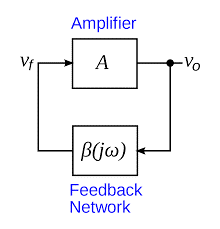

An amplifier circuit simply increases the signal strength. But while amplifying, it just increases the strength of its input signal whether it contains information or some noise along with information. This noise or some disturbance is introduced in the amplifiers because of their strong tendency to introduce hum due to sudden temperature changes or stray electric and magnetic fields. Therefore, every high gain amplifier tends to give noise along with signal in its output, which is very undesirable.
The noise level in the amplifier circuits can be considerably reduced by using negative feedback done by injecting a fraction of output in phase opposition to the input signal.
The feedback-amplifier can be defined as an amplifier which has feedback lane that exists between o/p to input. In this type of amplifier, feedback is the limitation which calculates the sum of feedback given in the following amplifier. The feedback factor is the ratio of the feedback signal and the input signal.

1. Positive Feedback Amplifier:
The positive feedback can be defined as when the feedback current otherwise voltage is applied for increasing the i/p voltage, then it is named as positive feedback. Direct feedback is another name of this positive feedback. Because positive feedback generates unnecessary distortion; it is not often used in amplifiers. But, it amplifies the original signal power and can be used in oscillator circuits.
2. Negative Feedback Amplifier:
The negative feedback can be defined as if the feedback current otherwise voltage can be applied for reducing the amplifier i/p, then it is called as negative feedback. Inverse feedback is another name of this negative feedback. This kind of feedback is regularly used in amplifier circuits.

An Oscillator is basically an Amplifier with “Positive Feedback”, or regenerative feedback (in-phase) and without any external input signal that generates an output waveform of a desired frequency.
An oscillator is basically a waveform generator which generates an output waveform, which oscillates with constant amplitude & constant desired frequency.
The frequency of oscillation at which sinusoidal oscillator operates is the frequency for which the total shift introduced, as the signal proceeds from the input terminals, through the amplifier and feedback network, and back again to the input, is precisely zero (or an integral multiple of 2*Π).
Stated simply the condition A*β = -1 at ω= ωo, i.e. the magnitude of loop gain should be one and phase of loop gain should be unity (the feedback network introduces 1800 phase shift, the other 1800 phase shift is provided by Amplifier) is called Barkhausen criterion.
A closed loop system with negative feedback can be represented by a transfer function = A/(1+A*β). Often feedback network consists of only resistive elements and is independent of frequency but amplifier gain is a function of frequency. Hence the loop gain A*β is a function of frequency. There may exist a frequency ωo at which its magnitude is one and phase is 1800 i.e. A*β = -1 (Barkhausen criterion).
One of the simplest sine wave oscillators which uses a RC network in place of the conventional LC tuned tank circuit to produce a sinusoidal output waveform, is called a Wien Bridge Oscillator .
The Wien Bridge Oscillator is so called because the circuit is based on a frequency-selective form of the Wheatstone bridge circuit. The Wien Bridge oscillator is a two-stage RC coupled amplifier circuit that has good stability at its resonant frequency, low distortion and is very easy to tune making it a popular circuit as an audio frequency oscillator but the phase shift of the output signal is considerably different from the previous phase shift RC Oscillator.
The Wien Bridge Oscillator uses a feedback circuit consisting of a series RC circuit connected with a parallel RC of the same component values producing a phase delay or phase advance circuit depending upon the frequency. At the resonant frequency ƒr the phase shift is 00. Consider the circuit below.
The above RC network consists of a series RC circuit connected to a parallel RC forming basically a High Pass Filter connected to a Low Pass Filter producing a very selective second-order frequency dependent Band Pass Filter with a high Q factor at the selected frequency, ƒr.
At low frequencies the reactance of the series capacitor (C1) is very high so acts a bit like an open circuit, blocking any input signal at Vin resulting in virtually no output signal, Vout. Likewise, at high frequencies, the reactance of the parallel capacitor, (C2) becomes very low, so this parallel connected capacitor acts a bit like a short circuit across the output, so again there is no output signal.
So there must be a frequency point between these two extremes of C1 being open-circuited and C2 being short-circuited where the output voltage, VOUT reaches its maximum value. The frequency value of the input waveform at which this happens is called the oscillators Resonant Frequency, (ƒr).
At this resonant frequency, the circuits reactance equals its resistance, that is: Xc = R, and the phase difference between the input and output equals zero degrees. The magnitude of the output voltage is therefore at its maximum and is equal to one third (1/3) of the input voltage as shown.
It can be seen that at very low frequencies the phase angle between the input and output signals is “Positive” (Phase Advanced) , while at very high frequencies the phase angle becomes “Negative” (Phase Delay).
In the middle of these two points the circuit is at its resonant frequency, (ƒr) with the two signals being “in-phase” or 00. We can therefore define this resonant frequency point with the following expression.
Where:
ƒr is the Resonant Frequency in Hertz
R is the Resistance in Ohms
C is the Capacitance in Farads
We said previously that the magnitude of the output voltage, Vout from the RC network is at its maximum value and equal to one third (1/3) of the input voltage, Vin to allow for oscillations to occur. But why one third and not some other value. In order to understand why the output from the RC circuit above needs to be one-third, that is 0.333xVin, we have to consider the complex impedance (Z = R ± jX) of the two connected RC circuits.
We know from our AC Theory tutorials that the real part of the complex impedance is the resistance, R while the imaginary part is the reactance, X. As we are dealing with capacitors here, the reactance part will be capacitive reactance, Xc.
If we redraw the above RC network as shown, we can clearly see that it consists of two RC circuits connected together with the output taken from their junction. Resistor R1 and capacitor C1 form the top series network, while resistor R2 and capacitor C2 form the bottom parallel network.
Therefore the total DC impedance of the series combination (R1C1) we can call, ZS and the total impedance of the parallel combination (R2C2) we can call, ZP. As ZS and ZP are effectively connected together in series across the input, Vin, they form a voltage divider network with the output taken from across ZP as shown.